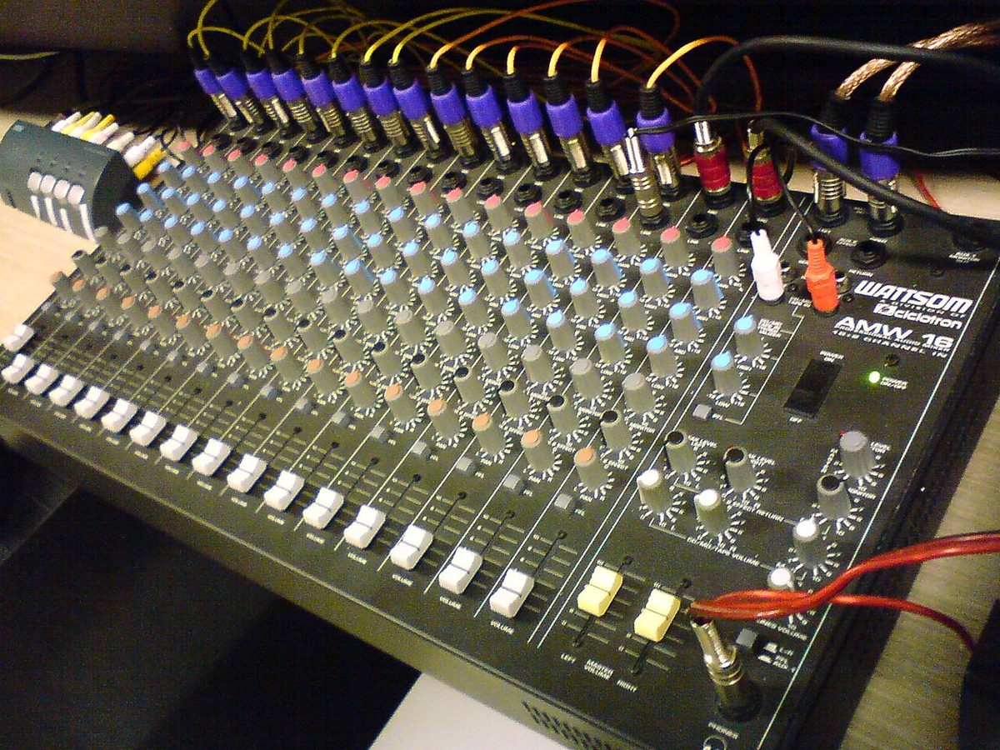
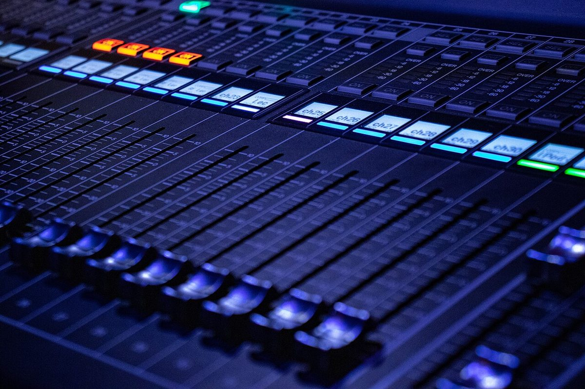
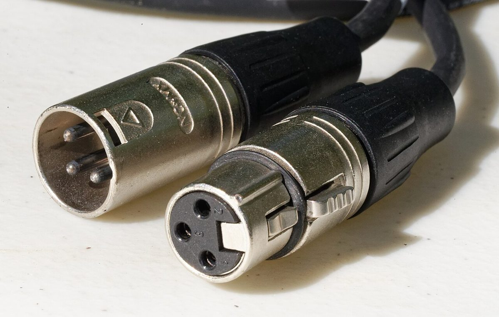

6. Analog Mixer Lab: Patch, Gain & FX Bus
12-Channel Console · Pre/Post AUX · Live 4-Stem AudioAudio Bus & FX Return
Listen to the desk. Lower Ch. 1 from 0 to −6 dB. Which bus stays steady? Switch Main / Monitor to check.Estimated peaks · dBFS
Knowing Your Stage & Console Connectors
Every connector type matches a signal voltage, impedance, and wiring topology. Picking the wrong cable is the fastest way to inject hum, mute a condenser capsule, or overload an input stage.
XLR — 3 pins, balanced, locking
The standard microphone cable. Two out-of-polarity signal conductors reject long-run interference, a locking latch keeps cables seated on stage, and pins carry +48V phantom power safely to condenser capsules.
TRS ¼″ — Tip · Ring · Sleeve (Balanced Line)
Recognizable by two dark insulator rings. Carries balanced line-level signals from keyboards, interfaces, or mixer Main L/R outputs into powered stage speakers.
TS ¼″ — Tip · Sleeve (Unbalanced Instrument)
One insulator ring. Connects passive guitars and basses to short Hi-Z channel inputs or directly into a DI box next to the pedalboard.
RCA Stereo & Bare Speaker Wire
Red/white RCA pairs bring consumer tablets and phones into dedicated aux channels. Heavy twin-conductor speaker wire carries high current after a power amp to passive cabinets — never from a mixer’s line output.
Setting Up & Mixing on a 12-Channel Desk
Step-by-Step Setup Sequence
- With speakers turned off, patch XLR mics, TS instruments, TRS balanced keys, RCA playback, and TRS Main Outs.
- Pull all faders to −∞ and trim gains down before powering on mixer first, powered speakers last.
- Switch +48V phantom on for condenser channels only.
- Have each musician play at full show volume while dialing Gain until meters peak safely around −12 to −6 dBFS.
- Raise faders toward unity (0 dB), balance the band, then bring in Monitor (AUX 1) and shared FX (AUX 2 + FX Return).
Gain Staging, Pan & Pre vs. Post Sends
If a preamp clips, pulling its channel fader down only makes a quieter clipped wave — notice in the audio engine above how distortion lives right after the Gain knob and before EQ or the fader.
Pre-fader (AUX 1 Monitor) stays constant even when you adjust the house mix. Post-fader (AUX 2 FX) scales automatically with the channel fader so reverb never lingers louder than a faded-out vocal.
Ready for studio tracking and digital desks? Continue to Lesson 7: The Recording Session and Lesson 8: Allen & Heath Qu-7.
Meet the Real Gear
The simulation mirrors real 12-channel analog desks from top to bottom: Trim at the top, EQ and AUX sends in the middle, Mute and linear Faders at the bottom. Click any photograph to enlarge it.


